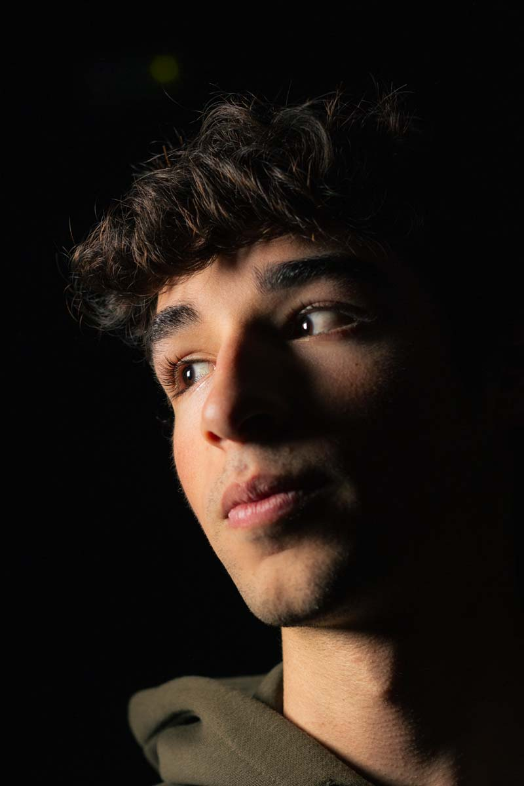

Pau Rosselló
¡Hola! Soy Pau Rosselló.
Comunicador audiovisual, realizador y editor especializado en
transformar ideas en historias visuales con impacto.
Como fotógrafo y videógrafo independiente, ayudo a marcas, artistas y particulares a conectar con su audiencia a través de publicidad, fotografía y contenido para redes. Actualmente, compagino mis proyectos con mi rol como editor en prácticas en Warner Bros Discovery, una experiencia que me permite trabajar bajo los estándares más exigentes de la industria internacional.
Estoy en el último año del Grado en Comunicación Audiovisual y Diploma en Realización y Producción de Cine y TV.
¿Tienes un proyecto en mente? Hagamos que cobre vida.